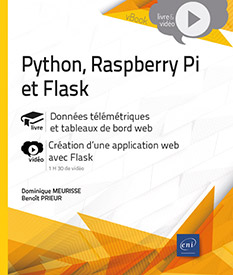

OCaml : De la syntaxe de base à la
programmation fonctionnelle, Éditions ENI
-
May 2024, VTOCAML, 1 h 54 (link)
|
|
Vulgarisation de l'informatique
quantique, Éditions ENI
-
April 2023, VTINFQUA, 1 h 22 (link)
|
|
Flask : Développez vos applications web
en Python, Éditions ENI
-
April 2020, VTFLA, 1 h 44 (link)
-
Included in Python, Raspberry Pi et Flask - Données
télémétriques et tableaux de bord web [book, Dominique
Meurisse], February 2022, ISBN 978-2-409-03424-4 (link)
|
 |
Introduction à l'informatique
quantique, Webinar Éditions ENI
-
May 2019, 48 mn, on YoutTube (link)
|
|